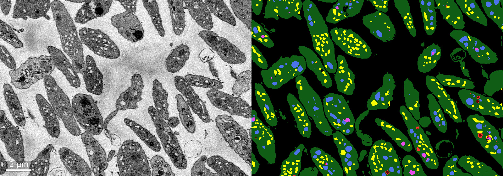

Chyi Ricketts
Computational Biologist

About Me
I'm Chyi Ricketts, a recent Master's graduate in Cancer Informatics at Imperial College London. I'm a computational biologist focused on cancer research, specifically using computational methods to turn the flood of biological data we now generate into something clinically meaningful. My work so far spans bioinformatics and drug discovery, with a foundation in wet-lab molecular biology that keeps me grounded in the biology behind the code. I'm currently looking for the right opportunity to contribute and keep learning. Always happy to connect.
Technical Toolkit
Languages & Tools
- Python
- R / RStudio
- HTML / CSS
- JavaScript
- Linux / HPC
- Git / GitHub
- Docker
- Nextflow
- SQL
- AWS
Bioinformatics
- Multi-omics data integration
- TCGA data analysis
- Survival analysis (Cox regression)
- CNV analysis
- DNA methylation analysis
- RPPA/proteomics analysis
- DESeq2 / edgeR
- Sequence alignment
- Binding affinity prediction
Machine Learning
- scikit-learn
- RF / SVR / XGBoost
- PyTorch
- TensorFlow
- GNNs (GATv2)
- ML Scoring Functions
- Cell Segmentation
- Cellpose / StarDist
- Model benchmarking & evaluation
Molecular Biology
- Cell Culture
- PCR / RT-qPCR
- Gel electrophoresis
- Flow cytometry
- siRNA/RNAi knockdown
- CRISPR knock-in tagging
- Confocal & fluorescent microscopy
- Zebrafish embryo microinjection
Selected Projects
ARSI as a Candidate Biomarker in Glioblastoma
A multi-omics investigation using TCGA data to identify ARSI as a candidate biomarker in Glioblastoma.

Target Specific Scoring Functions
Target-specific Machine Learning Scoring Functions have the potential to improve upon current generalizable scoring functions, particularly for lead optimization.

Cellular Segmentation
A comparative evaluation of leading cellular segmentation tools and the development of a web-based application for segmentation visualization and analysis.